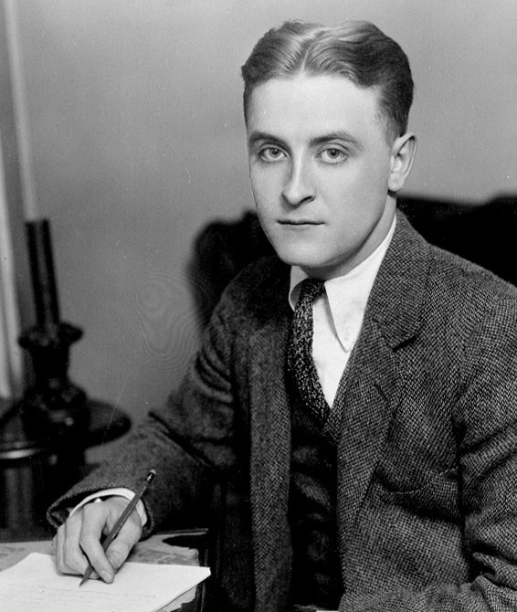

"The Great Gatsby is an undisputed classic of American literature from the period
following the First World War and is one of the great novels of the twentieth century"
- Anonymous
"F. Scott Fitzgerald's finest novel"
- Anonymous
$16.50
Details
Pages
240 Pages
Cover
Paperback
Publisher
Scribner
Language
English
Published
April 1995
Genre
Drama
Weight
4.8 ounces
Summary
The narrator, Nick Carraway, is a young Yale graduate who works as a bond broker in Manhattan. He rents a
house at West Egg on Long Island across the water from his cousin, Daisy. His neighbour there is the
enigmatic Jay Gatsby, a self-made millionaire from the Midwest who lives the high life from the profits
of his minor criminal activities.
Gatsby’s infamous parties are attended by many guests who do not know their host. Nick becomes cynically
fascinated and transfixed by Gatsby, and their friendship nurtures many confidences. Carraway learns
that Gatsby and Daisy had been in love, but that Daisy had not waited for him to return from the war and
had married another. Nick arranges a meeting between the two, and Daisy finds herself impressed by the
change in Gatsby’s fortunes. Daisy’s husband Tom, himself already involved in an affair with the
garage-owner’s wife Myrtle, becomes jealous of Gatsby’s attentions to his wife. Then Myrtle is killed in
an accident, and Tom tells Myrtle’s husband that Gatsby is responsible.
What Mac learns is that there is sixty million American dollars hidden in Cuba by Sara's grandfather when
he
fled Castro's revolution. With the "Cuban Thaw" underway between Havana and Washington, Carlos, Eduardo,
and
Sara know it's only a matter of time before someone finds the stash - by accident or on purpose. And Mac
knows if he accepts this job, he'll walk away rich…or not at all.
Through it all, Nick watches as Gatsby is betrayed by his own dreams, which have been nurtured by a
meretricious society.
About the author

F. Scott Fitzgerald was born on September 24, 1896, in St. Paul, Minnesota. His first novel's success made
him famous and he married the woman he loved, his muse Zelda, but he later descended into drinking and his
wife had a mental breakdown. Following the unsuccessful Tender is the Night, Fitzgerald moved to Hollywood
and became a scriptwriter. He died of a heart attack in 1940, at age 44, his final novel only half
completed.
DeMille spent three years at Hofstra University, then joined the Army where he attended Officer Candidate
School and was commissioned a Lieutenant in the United States Army (1966-69). He saw action in Vietnam
as an
infantry platoon leader with the First Cavalry Division and was decorated with the Air Medal, Bronze
Star,
and the Vietnamese Cross of Gallantry.
F. Scott Fitzgerald was born Francis Scott Key Fitzgerald on September 24, 1896, in St. Paul, Minnesota. His
namesake (and second cousin three times removed on his father's side) was Francis Scott Key, who wrote the
lyrics to the "Star-Spangled Banner." Fitzgerald's mother, Mary McQuillan, was from an Irish-Catholic family
that had made a small fortune in Minnesota as wholesale grocers. His father, Edward Fitzgerald, had opened a
wicker furniture business in St. Paul, and, when it failed, he took a job as a salesman for Procter & Gamble
that took his family back and forth between Buffalo and Syracuse in upstate New York during the first decade
of Fitzgerald's life. However, Edward Fitzgerald lost his job with Procter & Gamble in 1908, when F. Scott
Fitzgerald was 12, and the family moved back to St. Paul to live off of his mother's inheritance.
Fitzgerald was a bright, handsome and ambitious boy, the pride and joy of his parents and especially his
mother. He attended the St. Paul Academy, and when he was 13, he saw his first piece of writing appear in
print: a detective story published in the school newspaper. In 1911, when Fitzgerald was 15 years old, his
parents sent him to the Newman School, a prestigious Catholic preparatory school in New Jersey. There, he
met Father Sigourney Fay, who noticed his incipient talent with the written word and encouraged him to
pursue his literary ambitions.